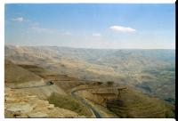
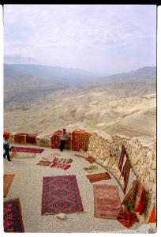
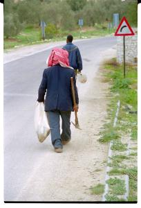
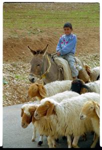

| Mercredi 07 Février, Amman vers la mer morte
Khaled ne s'est pas reveillé, Lionel s'en est chargé et nous
sommes sortis à la recherche d'un petit-dejeuner le temps
qu'il se prépare. Une ruelle à gauche. On se fixe sur un truc
classique genre pain-vache-qui-rit, cela rappellera Madagascar
et évite les kebabs au petit dej, donc la bouche qui pue!
On entre dans une échoppe où il y a de la vache qui rit, on
a déjà repéré la boulangerie en face. Le bonhomme de la boutique
ne peut pas nous parler: il a plein de fils qui sortent de
sa bouche et le relient à du pain genre pâte à pizza. C'est
du fromage et c'est rigolo de le voir empêtré comme ça. Alors
on lui souhaite bon appétit. Merci et, très gentimemt et spontanément
comme le font les jordaniens, il en arrache un bout et nous
le tend pour goûter: super bon! Alors on lui achète le même
fromage, on va à la boulangerie, on donne le fromage au boulanger
qui le met sur une galette pas cuite, la passe au four à bois...
et le petit dej est servi! Exquis.
Nous partons donc pour le big tour dans notre voiture avec
chauffeur. Direction la route du roi. Le premier arrêt est
à Madaba 30 Km au sud d'Amman. Cette ville est surtout
visitée pour ses mosaïques et surtout pour la carte de la
Palestine dans une église orthodoxe appelée Saint Georges.
Chouette une église! Moi qui adore ça! L'entrée est de 1 JD,
1 FF. Alors ça non, c'est trop bête, nous qui avons un budget
si serré (1JD, c'est quand même 2 kebabs!!!)... tant pis,
Marion, vas-y toute seule, prends des photos et raconte-moi!
(incurable ce mec!).
Descente vers le sud, on passe Dhiban. On s'arrête avant
Kerak juste au debut du Wadi Mujib, un profond canyon
qui entoure la route du roi. Le spectacle est saisissant,
les montagnes sont majestueuses, c'est vraiment pour de telles
occasions qu'on a 2 yeux (pour voir en relief quoi!). On a
du mal à se détacher de ce paysage si immense.
En y allant nous sommes passés devant les anciennes maisons
des bedouins, en fait des grottes assez basses et plutôt profondes,
de largeurs diverses où les bedouins logeaient il y a 45 ans
encore. Depuis, le gouvernement leur a donné des maisons en
dur et ça fait un petit village. Nombre d'entre eux vivent
toujours de façon traditionnelle sous des tentes tricotées
en laine noire, immenses: 4 mètres de profondeur sur 15 à
20 mètres de long. Ils élèvent des moutons en nomades 2 à
3 mois sur place, dans les montagnes l'été, dans les plaines
l'hiver.
Khaled nous a emmenés voir un de ses potes bédouins qui nous
offre le thé sous la tente. Tres accueillant, génial. Quand
ils parlent, on dirait souvent qu'ils sont fâchés, en fait
c'est la langue arabe qui fait ça et nous qui ne pigeons rien
parce qu'ils n'arrêtent pas de rigoler. Quant à leur hospitalité,
il n'y a pas photo! C'est là que nous avons vu les sacs de
blé donnés chaque mois par le gouvernement aux bédouins pour
les aider à nourrir leurs troupeaux. Puis nous sommes partis
vers la mer morte, Jericho, Jérusalem. Quelle region à puissante
histoire ! Pour atteindre la mer morte, nous avons traversé
la montagne depuis la route du roi. Superbes paysages quasi
desertiques de roches rouges. Quelques oliviers, bananiers,
pas grand chose d'autre, ha si, les moutons! Il y a plein
de légumes ici, ils poussent tous dans la vallée du Jourdain
irriguée: tomates, concombres, gros cornichons, persil, menthe,
aubergines, carottes, choux fleurs, pois-chiches, gros radis,
piments... A chaque repas on en a, c'est excellent.
Khaled nous a emmenés voir ses " bédouins " une nouvelle
fois. Accueil extra sous la tente, ils font du feu, du thé,
amènent du pain fait maison (sortes d'immenses crêpes au bon
goût de pain), un immense verre de yaourt qui est en fait
du petit lait. Lionel a bien du mal a tout boire! Puis les
bédouins nous filent leurs habits et nous voilà transformés
en Lawrence d'Arabie et femme de bédouin. C'est plutôt agréable,
ca tient bien chaud surtout à la tête.
Puis direction la mer morte, enfin, depuis que Papa
m'en a parlé quand j'étais petite, j'en rêve! c'est super,
mer et ciel se confondent, il y a plein de sel sur le bord.
Maillot de bain et...hop! En fait non pas hop parce que le
sol recouvert de cristaux de sel fait drôlement mal aux pieds.
Alors c'est plutôt hoooop... A mi-cuisses je me jette a l'eau:
plouf! Et là, surprise ! Je flotte sur le ventre fesses en
l'air! Trop drôle, impossible de nager, mes pieds sortent
de l'eau! J'ai l'impression d'être un bouchon et de ressentir
les mêmes mouvement que ceux que l'eau lui imprime! Par exemple,
je me mets sur le dos pieds et bras en l'air, ca tient très
bien. Si je veux prendre une pause plus cool, croiser les
jambes et bras derrière la nuque, je perds l'équilibre et
me retrouve sur le ventre! Bouchon ou canard? Lionel se trouve
trop gros, ses fesses ne flottent pas! Allez va, dans 3 mois
tu seras tout maigre! En sortant on est plein de sel et tout
poisseux. Khaled arrive avec de l'argile et m'en recouvre,
parait que ca protège des maladies. Rinçage, séchage, sans
serviette (oubliée) et direction les sources d'eau chaude.
Il commence a faire nuit et on aperçoit les lumières de Jéricho
et Jérusalem qui s'allument. C'est vraiment bizarre de se
retrouver sur les lieux des " histoires " tant entendues pendant
notre enfance. Avant cale tenait des mythes, de la belle histoire,
et voilà maintenant que ça existe ! La source d'eau chaude
(environ 45°) est dans une grotte. Juste à côté coule une
source " normale ". Donc bain froid, bain chaud, on alterne.
Ca fait du bien, surtout à Lionel qui commençait à être tout
rouge à cause du sel, avec des petits boutons ! C'est ça d'avoir
la peau sensible et de refuser l'argile verte (qui sentait
tout de même un peu la boue!)
Suite du voyage : Aquaba
|

Jordanie
avant Kerak
|

Jordanie
avant Kerak
|

Jordanie
avant Kerak
|

Jordanie
avant Kerak
|
|
|